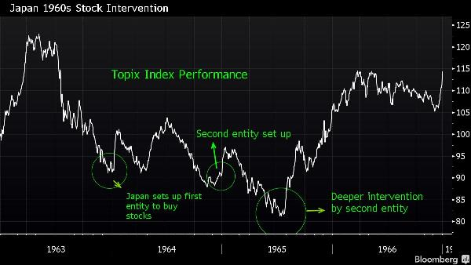
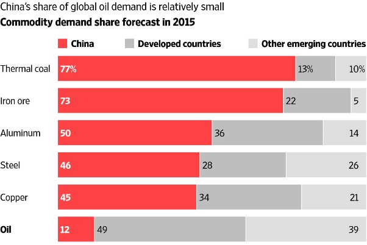

2015-09-08 18:15:00
最近几个月，由于股市震盪，中国经济发展的不确定性大幅提高，油价的持续疲软也有全球性的影响，我在前文《世界未来经济走向》虽然谈到这些话题，但是没有针对性地讨论其细节，所以在此补充几个观点。
中共当局在股市上所犯的基本错误是一方面没有对不劳而获的资本利得课徵适当的税率，另一方面又没有对内线交易做惩处的传统，所以在本身也天真地以为可以靠股市不劳而获时（亦即以为不动用国家资本、不设立新机构和新规则，就可以吸收游资，避免向国外流失），就等于安排全国的小户一起让内线洗劫一空。在这个情形下，最糟糕的反应是坚持美国的自由主义教条（亦即美国人说的那一套，而不是他们自己做的那一套；在2008年金融危机后，美国政府的实际反应是投入将近8000亿美金的政府资金，直接用来挽救银行和其他大企业），继续放任股市波动，那么连非内线的对冲基金和金融公司主管也将能大肆纵横这个杀戮战场。还好他们至少没有落入这个陷阱，否则不但大量资金会被掠夺，实体经济也会受股市崩盘的打击而陷入恐慌。
长期来看，中共必须对资本利得和内线交易做出反制，否则定期的大失血在所难免。然而短期内由国有资本来支撑股市会是什么样的过程呢？英美的媒体普遍诅咒讨伐，认为是搬石砸脚，不但必然徒劳无功，而且会造成更大的损失。但是最近Bloomberg发表了一篇与眾不同的文章（参见http://www.bloomberg.com/news/articles/2015-09-06/china-s-turmoil-could-be-just-a-blip-if-1960s-japan-is-a-guide；Bloomberg和纽约时报的驻中国记者群并列为最专注于负面报导的西方媒体；这篇相当专业的文章并不是他们写的，两名作者的驻地分别是香港和东京），赞同国资救市，其分析颇为中肯，值得介绍。
他们的论述主要基于一个重要的观察：当前中国经济的人均资本存量（Capital Stock，亦即累积的财富，主要体现在基础设施、工商业和人民的固定财產；採取相对美国的比值来做正规化Normalization）与日本相比，类似的是后者的1960年代中期，而不是1980年代末期。国资挽救股市的成败，最重要的因素在于整体经济的前景；既然中国经济类似1960年代的日本而不是1980年代的日本，那么就不能用日本政府在1990年挽救股市的失败来断言中国的未来。刚好日本在1963年七月也经歷过一次股市泡沫爆裂，而日本政府的反应与今日的中共当局一模一样，由中央银行组织了两个金融机构的联盟，进行了三次大规模的救市，终于遏止了股票的颓势，使市场回归稳定。日本中央银行投入的资金得以获利完全回收，这个熊市也只成为日本经济奇蹟过程中的一个小插曲。
日本政府等了6个月才出手救市，其后12个月和18个月又各进场了一次，总共花了 4275亿日元，相当于1964年日本GDP的3.2%。东证股价指数（Topix）从1963年七月的122点落到1965年七月的82点，跌幅为33%，其后迅速回升，重入牛市。上海股市自今年六月的5100点跌至目前的3200点，跌幅为37%；中共当局的救市比日本快、狠、强，应该不需要两年来稳定市场，不过直接和间接总花费或许仍会接近GDP的3.2%，相当于2.3兆人民币。
在油价方面，十个月前我提到很多页岩油田的生產成本在$50-80一桶，所以油价一但跌到这个范围，就会开始逼迫页岩油开採商减產。实际上发生的是美国的页岩油商用了很多紧急的成本节约手段，使油价一路跌破$60一桶才严重地影响他们的财务，结果是减產的过程被迟滞，于是油价得以衝到目前的$50左右一桶。这些页岩油商大部分是靠高利贷（High-Yield Bond）支持的小公司，在未来这一年会倒下一片，到2016年底或2017年初原油市场应该会慢慢回归供需平衡，届时油价才可能得到温和上涨的动力。
这是2015年世界大宗商品消费额份图。红色是中国，深灰是已开发国家，浅灰是中国以外的开发中国家。由上至下分别是发电用煤、铁矿、铝、钢、铜和原油。很明显的，中国在原油消费所占的比率很小，甚至低于全球平均，所以中国的经济转型对原油价格的下跌是一个十分次要的因素。
原油在未来对中国最大的意义在于定价权，因为这是削弱美元霸权的关键步骤（参见前文《美元的金融霸权》）。最新的传言号称上海国际能源交易所（Shanghai International Energy Exchange）将在下个月开办以人民币定价的原油期货合约。目前国际上的两个主要原油期货（北海的Brent和西德州WTI）都是以美元定价；我虽然一直知道中共急于打击美元的国际储备货币地位，而争夺原油的定价权是极重要的手段，但是却没有料到中方会动手得这么快。前几个月中共开始允许个别炼油厂跳过中石油和中石化而直接向国外购买原油，现在看来显然是在为这个新原油期货合约做准备。如果这个合约受到產油国的重视，美元的Götterdämmerung（诸神的黄昏，这是德文，华格纳所写《尼伯龙根的指环》四部曲中的最后一部）将指日可待。